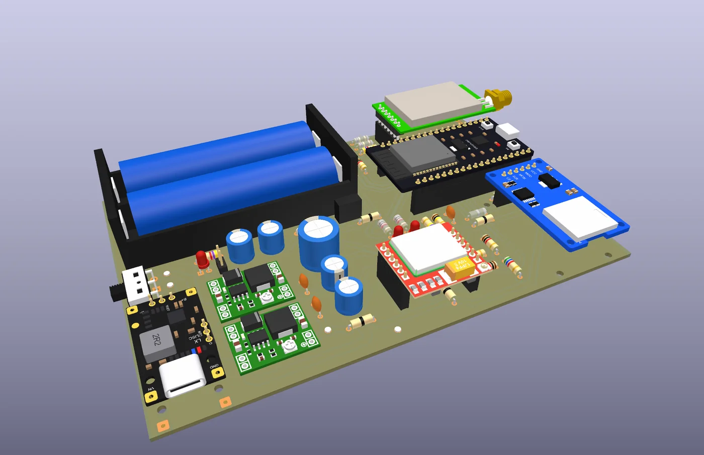
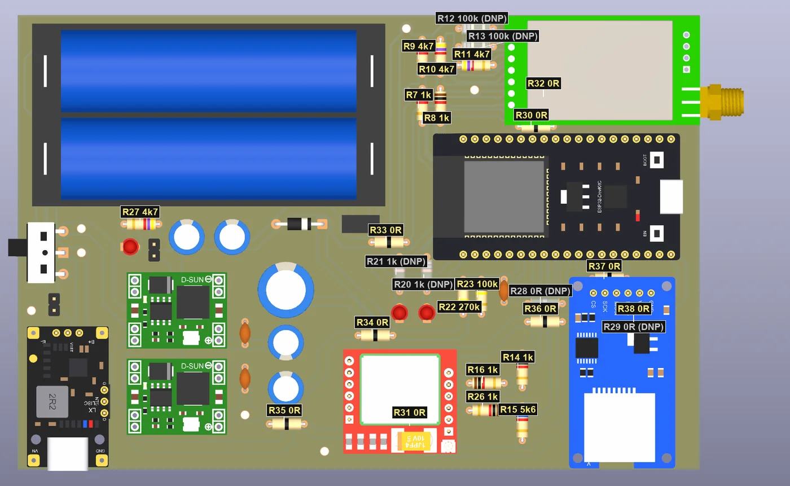
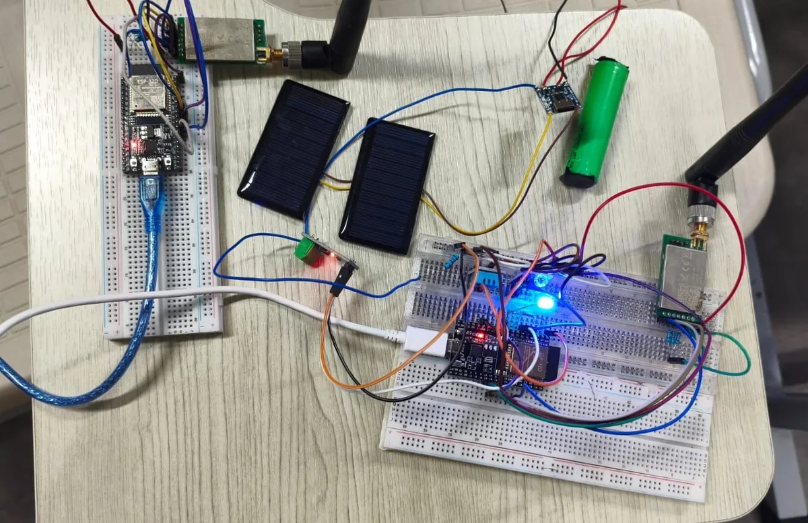
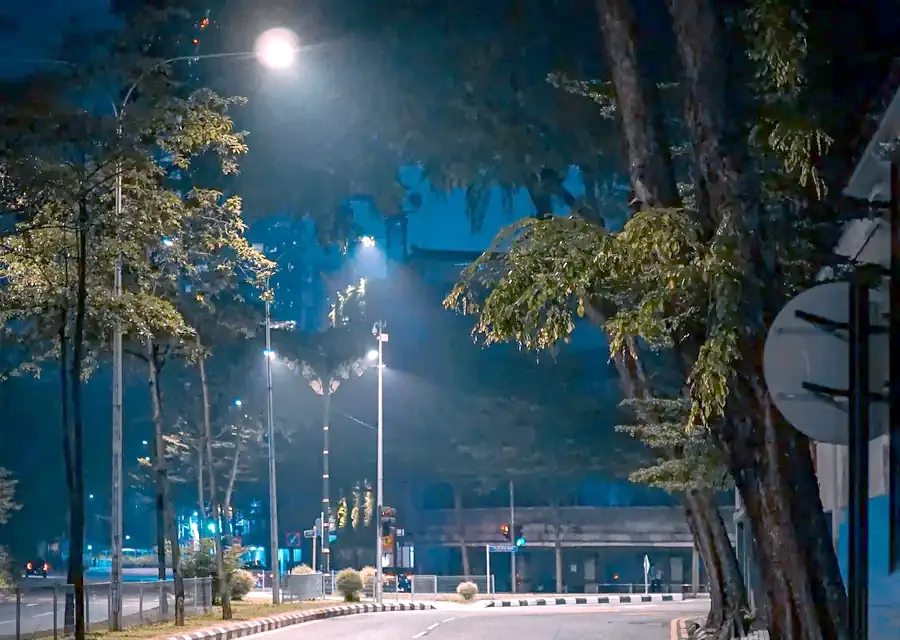
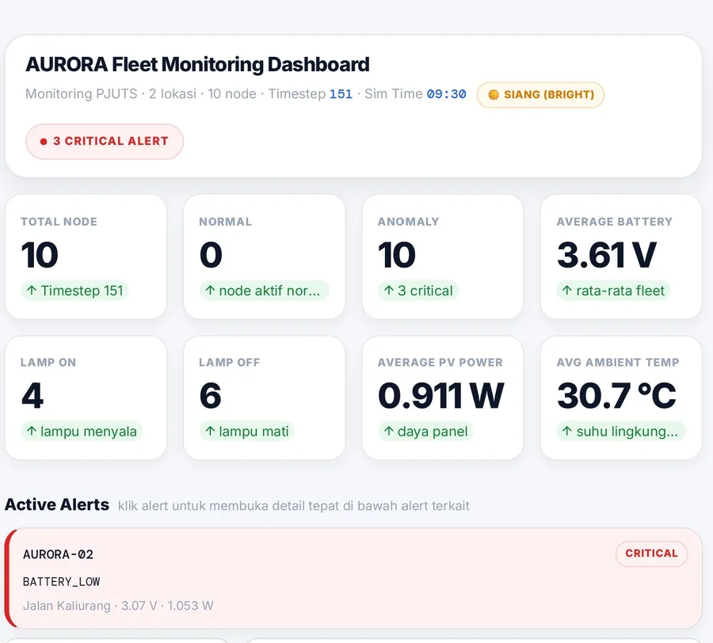
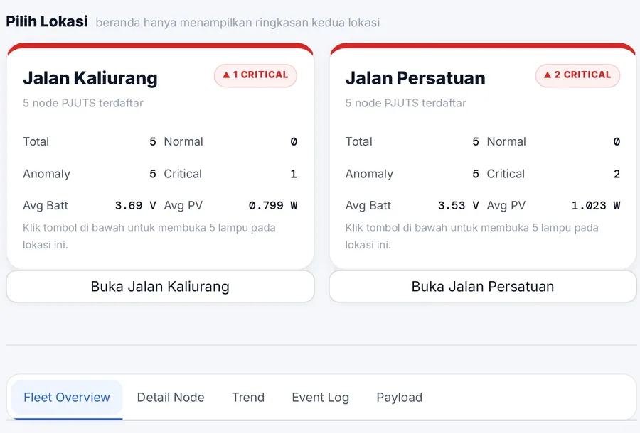

Capstone A-06 · DTETI 2026
AURORA
Lampu jalan tenaga surya yang bisa melapor sendiri.
Sistem monitoring PJU-TS untuk daerah terpencil. Node di tiang mengirim data kondisinya lewat LoRa, dan operator melihatnya di satu dashboard. Deteksi anomali sedang dirancang.
A-06 · Capstone DTETI 2026 · C251 desain → C501 implementasi, eksperimen, validasi
01 · Masalah dan gagasan
Lampu jalan yang bermasalah tidak punya cara untuk bilang.
PJU-TS di daerah terpencil tersebar di ruas jalan yang panjang, sering tanpa sinyal seluler yang bisa diandalkan di tiap tiang. Panel yang meredup, baterai yang melemah, lampu atau beban yang janggal, suhu yang tidak wajar: semuanya meninggalkan jejak di data, tetapi data itu tidak punya jalan keluar.
AURORA dirancang memberi tiang dua kemampuan: menilai kondisi operasinya sendiri, dan mengabarkan hal yang perlu perhatian lewat jalur radio yang tidak bergantung pada seluler di setiap tiang.
- TersebarBanyak titik di ruas panjang; memeriksa satu per satu berarti patroli.
- Konektivitas terbatasSeluler tidak menentu, sehingga laporan jarak jauh dari tiap tiang tidak praktis.
- Pemeliharaan reaktifMasalah baru diketahui setelah ada yang melapor atau teknisi lewat.
Alur pikir AURORA: Sense, Understand, Deliver, Act
-
01
SENSE
Rancangan sensor di tiang: tegangan, arus, suhu, dan cahaya. Pada prototipe saat ini sebagian pembacaan belum valid.
-
02
UNDERSTAND
Rancangan: pemrosesan lokal membandingkan pembacaan dengan baseline sesuai kondisi, lalu menandai penyimpangan yang bertahan. Belum diuji.
-
03
DELIVER
Paket dikirim lewat LoRa ke sink lokal dengan ACK dan pengulangan kirim. Jalur lewat relay baru teruji lewat emulasi.
-
04
ACT
Dashboard menampilkan status; operator dan teknisi memutuskan tindakan. Pengaturan terang lampu (PWM) ada di firmware; dimming adaptif belum diuji.
Yang dideteksi
Empat skenario anomali, satu pendekatan.
Metode yang dirancang sederhana dan bisa dijelaskan: pembacaan dibandingkan dengan perkiraan sesuai kondisi, selisihnya dihitung, dan baru ditandai bila selisih itu bertahan. Belum diuji.
baseline sadar kondisi→residual→persistence
- PV low generationPanel surya kurang menghasilkanDaya jauh di bawah yang wajar untuk cahaya saat itu.
- Battery low / abnormalBaterai rendah atau janggalTegangan atau perilaku pengisian menyimpang.
- Lamp / load abnormalLampu atau beban tidak normalArus beban tidak sesuai dengan status lampu.
- Thermal abnormalSuhu tidak wajarSuhu menyimpang dari pola kondisi sekitar.
Batas klaim. AURORA bukan pengganti teknisi dan tidak mengklaim diagnosis akar masalah atau prediksi sisa umur. Yang dituju: deteksi dini anomali untuk mendukung pemeliharaan.
Make distributed solar street lights able to understand their own operating condition and reliably communicate when something needs attention.
Buat lampu jalan tenaga surya yang tersebar mampu memahami kondisi operasinya sendiri dan berkomunikasi dengan andal saat ada yang perlu perhatian.
Misi AURORA
02 · Cara kerja
Dari tiang sampai layar operator.
Sensor di tiang → pemrosesan lokal → LoRa dengan relay → sink lokal → backend dan database → dashboard. Tiap lapisan punya satu tugas.
Edge Node di tiang
ESP32 dirancang membaca sensor tegangan, arus, suhu, dan cahaya, lalu memprosesnya di tempat sebelum mengirim.
Radio LoRa dan relay
Modul Ebyte
E32-433T30D(433 MHz). Uji bench terdahulu memakai modul 900 MHz; di 433 MHz belum ada uji bench. Paket dirancang bisa lewat relay, dengan ACK dan pengulangan kirim.Sink / Gateway lokal
ESP32 dengan GSM
SIM800L(HTTPS ke cloud). Kartu microSD menyimpan data secara lokal.Backend dan database
Satu sumber kebenaran. Setiap paket punya
message_idunik, jadi kiriman ganda tidak menggandakan data.Dashboard operator
Rancangan: terbaca online lewat SIM. Jalur offline lewat microSD dan USB belum diuji ujung ke ujung.
Kontrak data v0.2
Aturan kecil yang membuat data bisa dipercaya.
- FormatJSON dengan key snake_case.
- IdempotenTiap paket punya message_id unik. Respons: 201 stored200 duplicate409 conflict
- Sensor tidak validKey sensor yang tidak valid tidak dikirim, bukan dikirim sebagai angka palsu.
- Asal datasource_type: physical atau simulated, supaya data uji tidak menyamar sebagai data lapangan.
03 · Tim
Empat orang, masing-masing memegang satu misi.
Setiap misi punya satu pertanyaan yang harus bisa dijawab dengan bukti.
- 01Grego
- 02Iffat
- 03Mirzariel
- 04Qiara
Empat lapisan cahaya melambangkan empat anggota tim yang bekerja bersama membangun sistem AURORA.
-
Grego
Hardware & Sensing
“Make the node trustworthy”
Pertanyaan yang harus terjawabApakah angka dari node ini boleh dipercaya?
-
Iffat
Condition Intelligence
“Know when the system is behaving abnormally”
Pertanyaan yang harus terjawabKapan kondisi ini mulai menyimpang dari yang wajar untuk keadaan sekarang?
-
Mirzariel (Eril)
Resilient Communication
“Make sure information survives the journey”
Pertanyaan yang harus terjawabKalau sebuah paket hilang di jalan, bagaimana kita tahu dan memulihkannya?
-
Qiara
System Observability & UX
“Make the system understandable and actionable”
Pertanyaan yang harus terjawabApa yang perlu dilakukan operator sekarang, dan dari data mana kesimpulan itu berasal?
04 · Hardware
Dari breadboard ke papan sirkuit satu lapis.
Prototipe pembuktian konsep sudah berjalan di meja. Papan sirkuit Pusat/Relay sedang dibangun bertahap (digiling CNC) dan belum diuji sebagai papan utuh.


- Radio
- Ebyte E32-433T30D433 MHz, UART ke ESP32. Uji bench terdahulu memakai modul 900 MHz; di 433 MHz belum ada uji bench.
- Pengendali
- ESP32
- Sink
- GSM SIM800L (HTTPS ke cloud)microSD sebagai penyimpanan lokal
- Daya (2S)
- 2 × 18650 + BMS + IP2326 + buck MP1584EN
- PCB
- Single-layer, digiling CNC




Deteksi dini anomali untuk mendukung pemeliharaan, bukan pengganti teknisi.
Posisi AURORA
05 · Dashboard operator
Satu layar untuk status semua tiang.
Rancangan status node. Dashboard saat ini baru membedakan Normal, Perlu dicek, Data lama, dan Belum ada data; empat status lain di bawah masih rancangan dan belum diimplementasikan.
- NORMAL
- Data segar, nilai dalam batas wajar.
- ANOMALY
- Pembacaan menyimpang dari baseline dan bertahan.
- STALE
- Data terakhir sudah usang; nilai ditampilkan sebagai yang terakhir diketahui.
- OFFLINE
- Node tidak terdengar melewati batas waktu.
- SENSOR INVALID
- Sensor mengirim pembacaan yang tidak masuk akal; tidak dihitung sebagai data.
- COMMUNICATION DEGRADED
- Jalur komunikasi bermasalah walau node masih terdengar.




Catatan. Dua tangkapan layar di atas adalah versi awal dengan data simulasi. Antarmuka terbaru belum ditampilkan di sini dan belum diuji dengan LoRa nyata.
Prinsip rancangan
Satu sumber kebenaran: database.
Dashboard hanya membaca database. Jalur online dan offline berbeda, tetapi keduanya bermuara di tempat yang sama, dan message_id mencegah data ganda.
06 · Video
Video kelompok kami.
Rangkuman proyek AURORA dalam bentuk video yang kami buat sendiri.
Video segera hadir
Bagian berikut memuat hasil yang tercatat beserta batasnya.
Cara membaca bagian ini
07 · Bukti dan progres
Terbukti, target, dan belum dijalankan.
Setiap angka diberi label asalnya. Label menunjukkan seberapa dekat pengujian dengan keadaan sebenarnya.
Konteks bench. Semua hasil BENCH_RF di bawah diukur pada modul radio 900 MHz (E220-900T22D) dengan jarak sekitar 35 cm di meja. Di 433 MHz, frekuensi yang direncanakan untuk perangkat akhir, belum ada uji bench.
- BENCH_RF
Link Pusat ↔ Tiang v3
Board dan radio nyata. Paket dari tiang tiba di Pusat pada jarak sekitar 35 cm.
229/229paket tiba - BENCH_RF
Skenario rugi paket 30%
Mekanisme kirim ulang memulihkan pengiriman yang sengaja dibuat rugi.
100%pulih lewat retry - BENCH_RF
Uji tahan satu jam
Pengiriman terus-menerus selama satu jam; semua paket tercatat di program gateway pada laptop.
454/454tercatat di gateway - BENCH_RF
v4: ACK setelah tersimpan
ACK baru dikirim setelah paket tersimpan di SQLite pada gateway laptop. Program gateway sengaja dimatikan 60 detik di tengah pengiriman.
25/25tiba · 0 gap - EMULASI
Relay satu hop
Hanya emulasi. Belum ada relay lewat radio nyata; itu butuh papan ketiga.
155/155emulasi, bukan RF - HOST_TEST
Tes otomatis dan fuzz
Ratusan tes otomatis lulus di komputer, tanpa board. Uji fuzz berupa simulasi.
0/1000gagal pada fuzz (simulasi) - CLOUD_TEST
Sink ke cloud lewat SIM Telkomsel
Satu paket dummy dari sink (SIM800L) tersimpan di database cloud, tanpa jalur LoRa. Data bertanda simulated; sensor fisik penuh belum melewati jalur ini.
201HTTP stored
Batas bukti
Belum terbukti, NOT RUN.
Hal-hal berikut belum dijalankan atau belum terbukti.
- Relay lewat RF nyata (satu relay, dua lompatan radio). Butuh papan ketiga; belum ada.
- Operasi di 433 MHz. Belum ada uji bench dengan radio 433 MHz.
- Jangkauan lapangan. Belum ada pengujian jarak di lapangan.
- Flush kartu SD nyata. Penulisan data ke kartu microSD pada perangkat sungguhan belum dijalankan.
- Akurasi lokalisasi jarak. Belum diukur.
- Kepatuhan regulasi. Batas daya di 433 MHz menurut catatan proyek (belum diverifikasi ulang dari sumber resmi) lebih rendah dari daya bawaan firmware; kami tidak mengklaim patuh.
- Deteksi anomali dan pembacaan sensor penuh. Belum diimplementasikan pada prototipe; sebagian pembacaan energi dan suhu masih ditandai tidak valid.
- Akurasi sensor dan F1 deteksi anomali. Wilayah kerja Grego dan Iffat; belum ada angkanya di data kami.
- Sensor fisik penuh lewat jalur cloud, serta dashboard hasil redesain dengan LoRa nyata.
Target teknis awal
Ini target yang kami pasang di awal, bukan hasil. Angka bench di atas tidak otomatis berarti target ini terpenuhi.
| Aspek | Target | Status |
|---|---|---|
| Akurasi sensor | ≥ 80% | target |
| Deteksi anomali (4 skenario) | ≥ 85% | target |
| Latensi median end-to-end | ≤ 10 s | target |
| PDR LoRa | ≥ 90% | target |
| Route success | ≥ 90% | target |
| Operasi kontinu | ≥ 2 jam, data hilang ≤ 5% | target |